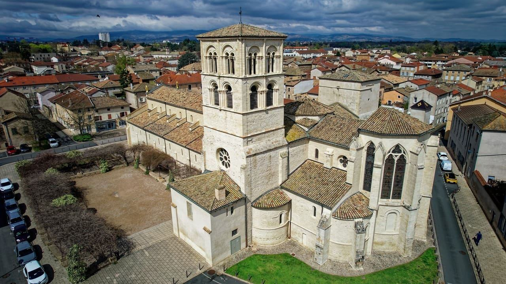

L’Hôtel-Dieu
Trois siècles de vie hospitalière, de 1733 à nos jours.
Un des plus beaux Hôtels-Dieu de France
Construit au début du XVIIIe siècle pour accueillir les pauvres de Belleville et des paroisses environnantes, l’Hôtel-Dieu a fermé en 1991. Successivement lieu d’accueil, centre de soins puis hospice, il témoigne de la vie hospitalière du XVIIIe siècle à nos jours.
Il est classé Monument historique et abrite un musée : expositions, conférences et concerts s’y succèdent toute l’année.

Un hôpital qui a grandi avec le siècle
Les premiers locaux sont inaugurés en 1733. L’établissement s’agrandit au XIXe siècle : seconde salle de malades et chapelle des malades en 1826, troisième salle en 1850, chapelle des Sœurs en 1851.
Trois salles garnies de leurs lits à ruelle, deux chapelles, une apothicairerie, une salle du conseil et un bloc opératoire du début du XXe siècle composent aujourd’hui le parcours. Le site est accessible aux personnes à mobilité réduite, hormis la chapelle des Sœurs.


Les pots de la pharmacie
Ancienne pharmacie de l’hôpital, elle est datée de 1754 par le musée, une pharmacie étant mentionnée dès 1749. Elle conserve une riche collection de pots en faïence, en verre et en porcelaine, ainsi que les instruments pour fabriquer les remèdes : appareil à cachets, pilulier, balances…
C’est à ces pots, les albarelles, que l’association doit son nom. L’apothicairerie se visite uniquement en visite guidée.
Réserver une visite guidéeLieux et objets à découvrir
Touchez une photo pour l’agrandir.
De 1733 à aujourd’hui
Sources : site du musée de l’Hôtel-Dieu, Journées européennes du patrimoine, presse locale. Les dates des deux sources sur la pharmacie (1749 et 1754) sont indiquées ensemble.
Dix massifs de plantes médicinales
Dans la cour Saint-Antoine, l’Albarelle a créé un jardin présentant les plantes autrefois cultivées par les Sœurs de Sainte-Marthe.
Elles sont regroupées par vertus : fébrifuges, toniques, dépuratives, anti-douleurs… L’accès est libre aux horaires du musée. Le sureau voisin est labellisé « Arbre remarquable » depuis 2023.
L’abbatiale Notre-Dame
Les « trésors bellevillois » invitent à prolonger la visite : l’abbatiale Notre-Dame, la ville et son port. Le musée propose des visites guidées de la ville et de l’église. Selon l’office de tourisme, l’abbatiale est fermée au public en 2026 pour travaux et ne se voit que de l’extérieur.
